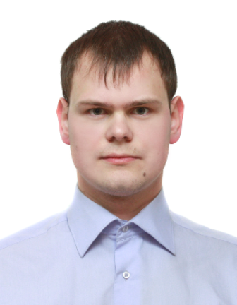

О себе
Ведущий инженер-программист с опытом работы с 2012 года.
Родился в поселке Ворга Ершичского района Смоленской области. Там же окончил среднюю школу.
В период с 2006 по 2012 учился в филиале МЭИ (ТУ) в городе Смоленске по специальности АСОИУ. Получил дипломы бакалавра (2010 год) и специалиста (2012 год).
В настоящее время работаю в АО "Радиозавод". Основной язык программирования - C++ (Qt4).
В свободное время изучаю и практикую другие языки программирования. Особую любовь питаю к языку сценариев bash. В последнее время также увлекся Python.